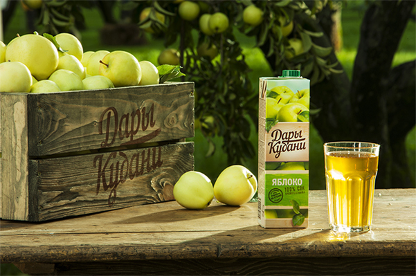

Вспомните Ваше лето. Сделайте глоток солнечного дня.

Кубань – самый южный регион России. Кубанское светлое солнце, плодородная земля, ласковые ветры и теплые летние дожди создают самый благоприятный мир для роста и созревания кубанских овощей, ягод и фруктов. Они впитывают в себя всё лето. Все восходы и закаты, все светлые дни и теплые ночи, всё плодородие и щедрость кубанской земли. Именно кубанские фрукты и ягоды мы берем для создания соков и нектаров «Дары Кубани».
Кубань – это лето России, наполненное солнцем, морем, южным гостеприимством и фруктовым изобилием. В соках и нектарах «Дары Кубани» мы сохраняем это лето с его теплым морским ветром, ярким южным солнцем и ароматом свежих кубанских фруктов. Наши соки наполнены до краев «вкусом кубанского солнца».